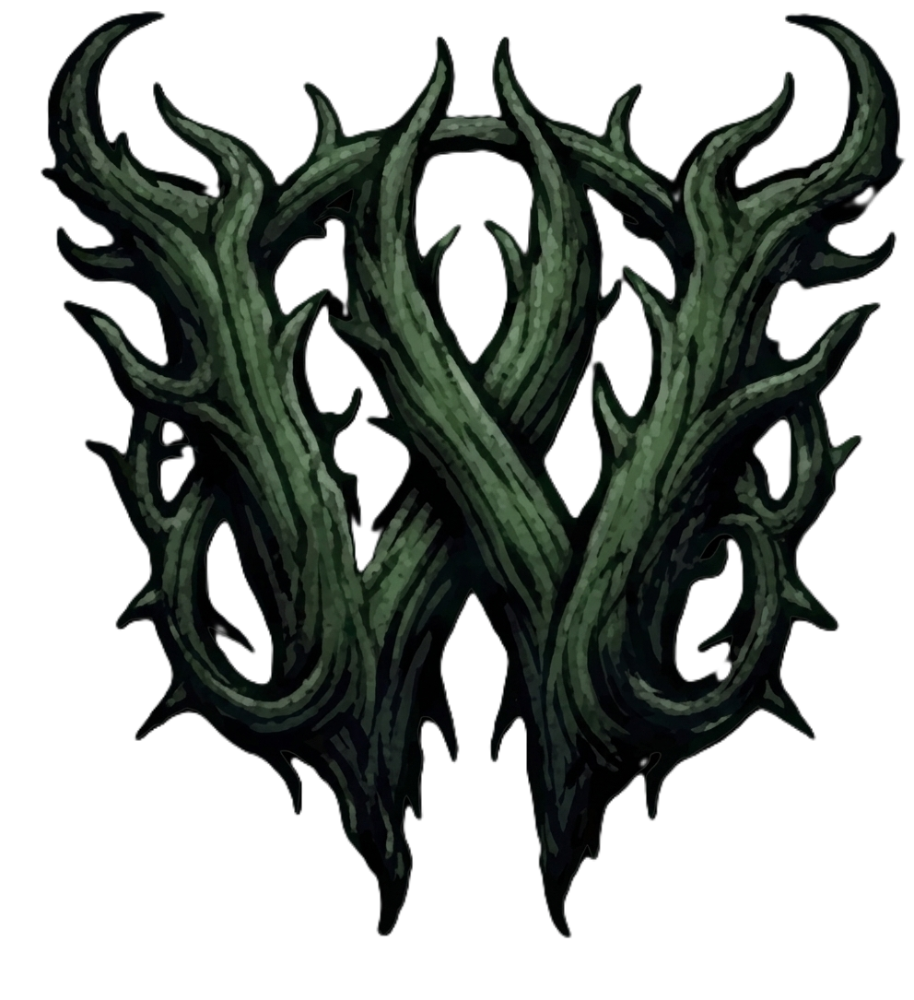

This game contains themes of psychological horror, survival situations, and mature narrative content. It is intended for players comfortable with dark, atmospheric storytelling.
Click anywhere to continue
dinoCorp Presents

LOST IN WOODS
A Psychological Survival Horror — narrated by AI
Created by
Nelson Cantela
Diover Canillo
Heeroe Conel
John Roque Mance
Rich Malig
Vince Onte
▓▓ CHOOSE YOUR SURVIVOR ▓▓
Loading…
Survivor
Lost In Woods
Survived
0
Score
0
Health
100/100
✦
✦
The forest shifts around you…
Press A · B · C · D to choose
Settings
Master Volume100%
Music Volume100%
SFX Volume100%
Narration Volume100%
Speech Rate0.95
Speech Pitch0.80
Text Size100%
Adjusts text size throughout the entire game
0
Final Score
The forest shifts around you…
Abandon this run?
Returning to the main menu ends your current playthrough — this story's progress will be lost.